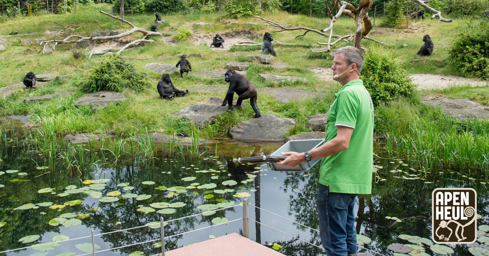

ApenHeul is een plek waar je kan rondlopen.
Maar waar je kan rondlopen kunnen de apen zelf ook lopen.
Waardoor je samen met de apen in een plek kunnen lopen en ze beter bekijken hoe ze leven.
Bezoekadres:
J.C. Wilslaan 21
7313 HK Apeldoorn
Postadres:
Postbus 97
7300 AB Apeldoorn
Contact
Telefoon: +31 (0)55 357 57 57
E-mail: info@apenheul.nl
Naar het apenheul